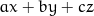

Assumed to be centred at 0, the coordinate system origin.
0=Parametric solution (t). Solutions were derived automatically using sympy.
Points in cartesian coordinates (x, y, z)
x = x0 - (a*x0 + b*y0 + c*z0)/(a + b*k + c*l);
y = -k*(a*x0 + b*y0 + c*z0)/(a + b*k + c*l) + y0;
z = -l*(a*x0 + b*y0 + c*z0)/(a + b*k + c*l) + z0;
sol = -(a*x0 + b*y0 + c*z0)/(a + b*k + c*l);


Assumed to be centred at 0, the coordinate system origin.
0=Parametric solution (t). Solutions were derived automatically using sympy.
Points in cartesian coordinates (x, y, z)
x = x0 - (a*x0 + b*y0 + c*z0)*sin(theta)*cos(phi)/(a*sin(theta)*cos(phi) + b*sin(phi)*sin(theta) + c*cos(theta));
y = y0 - (a*x0 + b*y0 + c*z0)*sin(phi)*sin(theta)/(a*sin(theta)*cos(phi) + b*sin(phi)*sin(theta) + c*cos(theta));
z = z0 - (a*x0 + b*y0 + c*z0)*cos(theta)/(a*sin(theta)*cos(phi) + b*sin(phi)*sin(theta) + c*cos(theta));
sol = -(a*x0 + b*y0 + c*z0)/(a*sin(theta)*cos(phi) + b*sin(phi)*sin(theta) + c*cos(theta));
By Johannes Buchner | Source code: https://github.com/JohannesBuchner/intersection | Open a issue or pull request if you would like somthing added